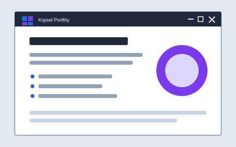

Call Center RepresentativeÇağrı Merkezi Müşteri Temsilcisi
Worked in a call center on the Hepsiburada project.Hepsiburada projesinde çağrı merkezinde görev yaptım.
Computer Science Student | HTML and CSSBilgisayar Bilimleri Öğrencisi | HTML ve CSS
HTML · CSS · Accessible Web PagesHTML · CSS · Erişilebilir Web Sayfaları
I am a first-year Computer Science student at Universum International College. I build clear, accessible web pages with HTML and CSS and aim to grow in software development.Universum International College'da birinci sınıf Bilgisayar Bilimleri öğrencisiyim. HTML ve CSS ile sade, anlaşılır ve erişilebilir web sayfaları geliştiriyor; yazılım geliştirme alanında ilerlemeyi hedefliyorum.
Worked in a call center on the Hepsiburada project.Hepsiburada projesinde çağrı merkezinde görev yaptım.
Worked in a family-owned hair salon, providing hair cutting, coloring, styling, and other salon services.Aile işletmesi olan Kuaför Öztunç'ta kesim, boyama, şekillendirme ve diğer kuaförlük işlerini yaptım.
Approximately ten years of football experience: Van İpekyolu Belediye Spor (2015–2018), Vanspor (2018–2020), Mersin İdman Yurdu (2021–2022), and Boluspor (2022–2025).Yaklaşık on yıllık futbol deneyimi: Van İpekyolu Belediye Spor (2015–2018), Vanspor (2018–2020), Mersin İdman Yurdu (2021–2022) ve Boluspor (2022–2025).
Designed and developed a personal portfolio website with HTML and CSS, focusing on clear structure, organized content, and an accessible user experience.HTML ve CSS kullanarak; anlaşılır sayfa yapısına, düzenli içeriğe ve erişilebilir kullanıcı deneyimine odaklanan kişisel bir portföy web sayfası tasarlayıp geliştiriyorum.
First-year student in the Computer Science bachelor's program.Bilgisayar Bilimleri lisans programında birinci sınıf öğrencisiyim.
Completed secondary education with a focus on science studies.Fen bilimleri alanında ortaöğretim eğitimimi tamamladım.
Earned a workplace opening certificate in web page coding during high school.Lise döneminde web sayfası kodlama alanında iş yeri açma belgesi aldım.

An ongoing personal portfolio website built with HTML and CSS. It presents my profile, skills, education, and contact information with a clear and accessible structure.HTML ve CSS ile hazırladığım, devam eden kişisel portföy web sayfası. Profilimi, becerilerimi, eğitimimi ve iletişim bilgilerimi anlaşılır ve erişilebilir bir yapıyla sunuyor.